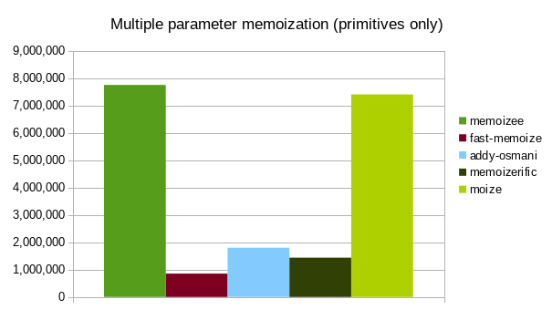
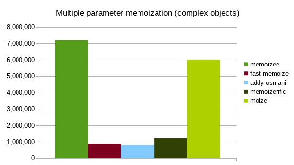

moize


This library strives to be the fastest possible implementation of memoization in JavaScript that supports all arguments passed, while offering flexibility in implementation.
Table of contents
Installation
$ npm i moize --saveUsage
import moize from 'moize';
const method = (a, b) => {
return a + b;
};
const memoized = moize(method);
memoized(2, 4); // 6
memoized(2, 4); // 6, pulled from cacheAll parameter types are supported, including circular objects, functions, etc. You can even memoize functional React components based on their props + context combination!
Advanced usage
moize also accepts an object of options as the second parameter. The full shape of these options:
{
cache: Map|Object, // custom cache implementation
isPromise: boolean, // is the result a promise
maxAge: number, // amount of time in milliseconds before the cache will expire
maxSize: number, // maximum size of cache for this method
serializer: Function // method to serialize the arguments to build a unique cache key
}cache defaults to new Map()
The default cache implementation is highly performant, however if you would like then you can pass in a custom cache implementation. The only requirements for the cache implementation is that it matches the relevant Map API methods:
- delete
- get
- has
- set
isPromise defaults to false
Is the computed value in the function a Promise, and should we cache the resolved value from that Promise.
maxAge defaults to Infinity
The maximum amount of time in milliseconds that you want a computed value to be stored in cache for this method.
maxSize defaults to Infinity
The maximum size of the cache you want stored in cache for this method. Clearance of the cache once the maxSize is reached is on a Least Recently Used basis.
seralizer defaults to serializeArguments in utils.js
The default seralizer method is highly performant, however it may not cover all possible use cases (recursive objects, for example). In this case, you can pass in a custom serializer, which should return the serialized arguments to be used as a unique key for cache retreival.
Benchmarks
All values provided are the number of operations per second (ops/sec) calculated by the Benchmark suite. Note that underscore, lodash, and ramda do not support mulitple-parameter memoization, so they are not included in those benchmarks.

| underscore | lodash | ramda | memoizee | fast-memoize | addy-osmani | memoizerific | moize |
|---|---|---|---|---|---|---|---|
| 6,173,721 | 6,964,896 | 251,801 | 4,140,779 | 5,950,556 | 1,786,883 | 920,642 | 10,105,377 |

| memoizee | fast-memoize | addy-osmani | memoizerific | moize |
|---|---|---|---|---|
| 3,121,912 | 247,767 | 985,573 | 742,577 | 3,291,722 |

| memoizee | fast-memoize | addy-osmani | memoizerific | moize |
|---|---|---|---|---|
| 3,363 | 221,302 | 470,113 | 32,307 | 650,998 |
Browser support
- Chrome (all versions)
- Firefox (all versions)
- Opera 15+
- Edge (all versions)
- IE 9+
- Safari 6+
Theoretically the support should go back even farther, these are just the environments that I have tested.
Development
Standard stuff, clone the repo and npm install dependencies. The npm scripts available:
build=> run webpack to build developmentdistfile with NODE_ENV=developmentbuild:minifed=> run webpack to build productiondistfile with NODE_ENV=productiondev=> run webpack dev server to run example app (playground!)dist=> runsbuildandbuild-minifieddocs=> builds the docs viajsdoclint=> run ESLint against all files in thesrcfolderprepublish=> runscompile-for-publishprepublish:compile=> runlint,test,transpile,disttest=> run AVA test functions withNODE_ENV=testtest:coverage=> runtestbut withnycfor coverage checkertest:watch=> runtest, but with persistent watchertranspile=> run babel against all files insrcto create files inlib